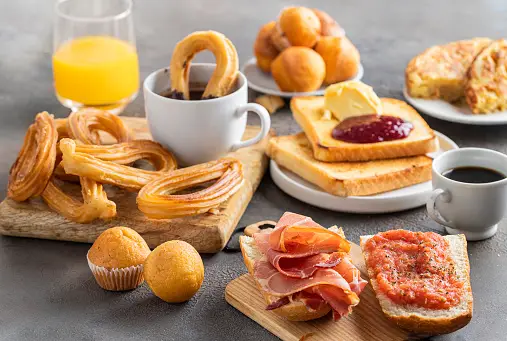

85% would make this again
Strawberry Creams Cheesecake
One thing learned living in the Canarsie section of Brooklyn, NY was how to cook
a good Italian meal.
Here is a recipe I created after having this dish in a restaurant . Enjoy!
Tricia Albert
yesterday
456